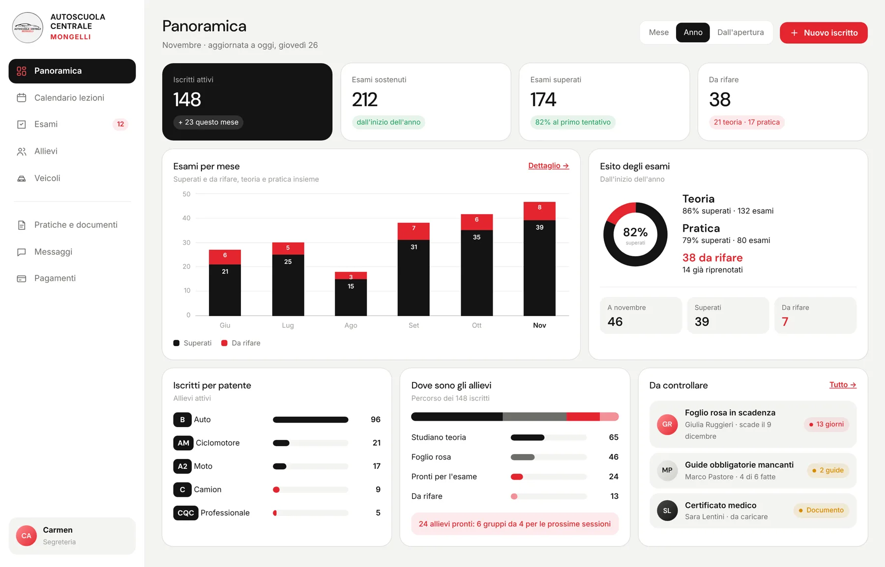

Schermata 01 · Panoramica
Iscritti, esami superati e da rifare
In alto gli iscritti attivi, gli esami sostenuti, quelli superati e quelli da rifare. Il grafico mostra mese per mese superati e da rifare, a fianco l'esito di teoria e pratica, sotto gli iscritti per patente e le scadenze da controllare.
- Esami superati e da rifare, mese per mese
- Iscritti per tipo di patente
- Fogli rosa e documenti in scadenza
